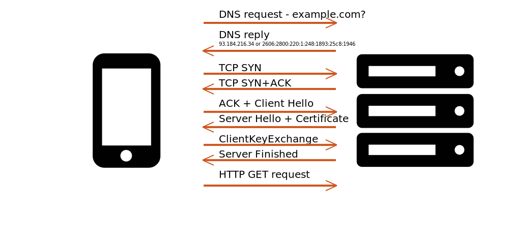
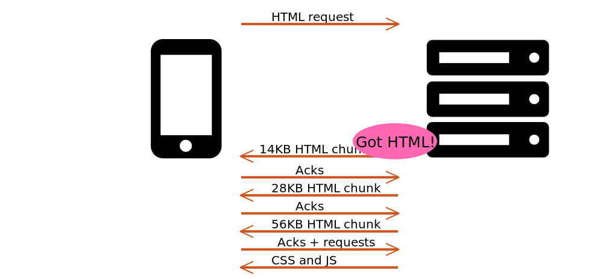
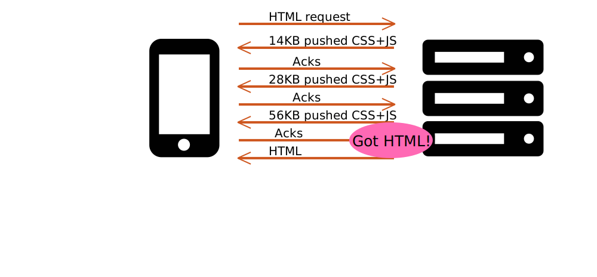
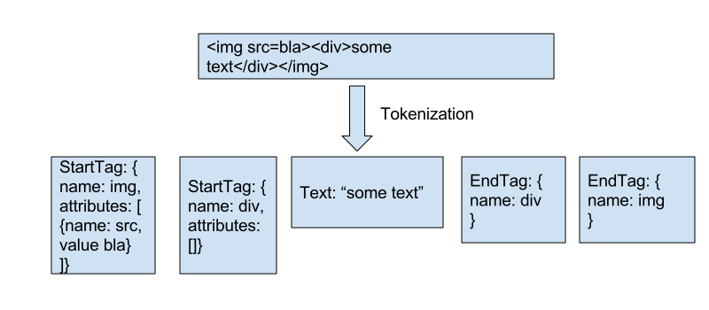
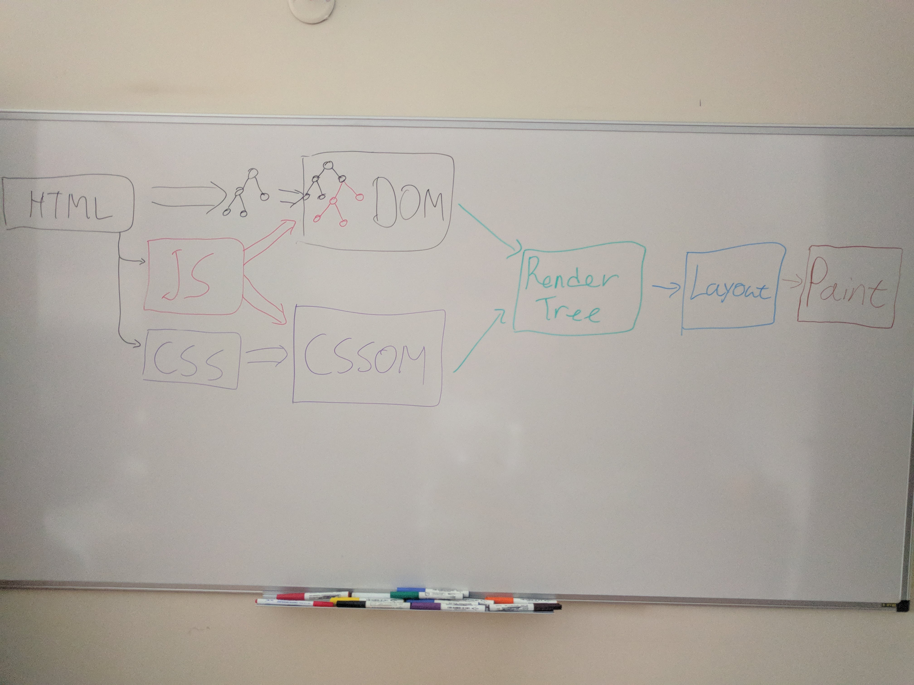
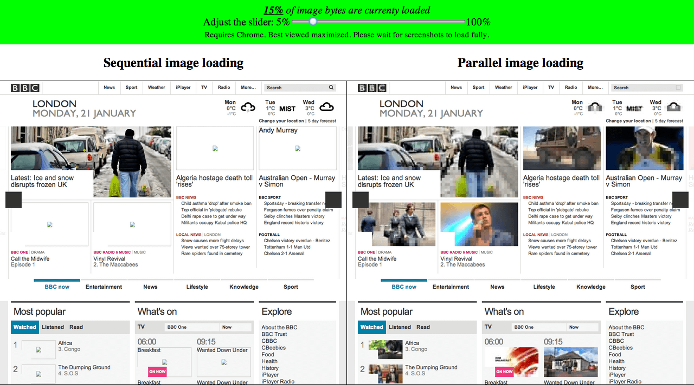
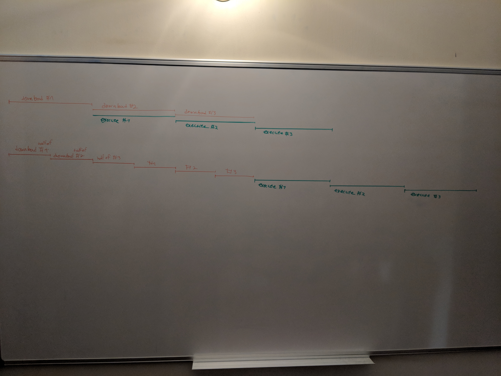

What does it take to deliver web sites in the highest performing way possible? What would it take for us to say that given certain bandwidth, latency and CPU constraints, a web site was delivered to the user in the best possible speed?
This is a question that I’ve spent a lot of time on in the last few years, thinking about what ideal performance would take both on the browser side as well as on the server/content side.
Ideal performance would require many different conditions in order to happen:
This chapter will explore ways to make sure these conditions are maintained when loading and executing content on the web. These conditions most probably require changes in the way browsers load web content. However, they cannot rely solely on that. In order for some of these conditions to be met, web content must also be changed.
At the same time, we will not cover all the above conditions. Specifically, the chapter will focus on resource loading and will leave CPU utilization, main-thread blocking avoidance and performance measurement to be covered elsewhere.
“Early Delivery” means that useful-relevant content starts to be sent down to the browser shortly after the user performed some action that indicates that they are interested on that content, for example clicked on a link or typed something in their URL bar. (or even before that, if the application can have high enough confidence that they would)
Network protocols have traditionally had latency overhead and connection establishment time which delayed the time between the point where they could have been delivered and the time they actually were. Recent advances in the underlying protocols make that less of an issue.
Traditionally, the DNS, TCP and TLS protocol required a large number of round trip times (or RTTs) in order for the server to be able to start delivering useful data to the user.

Protocol advancements such as QUIC on the one hand and TCP-Fast-Open (TFO) and TLS1.3 on the other hand, made most of that obsolete. These protocols rely on previous established connections in order to keep cryptographic "cookies" remembering past sessions, and use that to recreate previous sessions instantaneously. There are still many caveats to that (e.g. very first session, QUIC negotiation, TFO+TLS1.3), but generally, we are working towards enabling very few RTTs to get in the way of data delivered to our users.
Preconnect is another way to get rid of these pesky RTT - just get them out of the way sooner, so that they don't get in the way of your site's critical rendering path.
Another form of protocol overhead is Slow Start. When the server starts sending data to the user, it doesn't know how much bandwidth it will have for that purpose. It can't be sure what amount of data will overwhelm the network and cause congestion. Since the implications of congestions can be severe , the slow start mechanism was developed in order to make sure it does not happen. TCP slow start is a mechanism that enables the server to gradually discover the connection's limits, by starting to send a small amount of packets, and increasing that exponentially. But due to its nature, slow start also limits us in the amount of data that we can initially send on a new connection.
The reason slow start is needed is to avoid congestion collapse.
Let's imagine a situation where the server is sending down significantly more packets than the network can effectively deliver or buffer. That means that many or even most of these packets will get dropped. And what do reliable protocols do when packets are dropped? They retransmit them!!
So now the server is trying to send all the retransmits for the dropped packets, but they are still more than the network can handle, so they get dropped.
What does the helpful transport layer do? You guessed it, retransmit again.
That process happens over and over, and ends up with a network which passes along mostly retransmits and very little useful information.
This is the reason it pays off to be conservative, start with a small number of packets and go up from there.
In the past the recommended amount of packets for the initial congestion window - the initial amount of packets the server can send on a fresh connection - was somewhere between 2 and 4, depending on their size.
In 2013 a group of researchers at Google have ran experiments all over the world with different congestion windows and reached the conclusion that this value can be lifted to 10.
If you're familiar with the "send all your critical content in the first 14KB of your HTML" rule, that's where this rule is coming from. Since the maximum Ethernet packet size is 1460 bytes of payload, 10 packets (or ~14KB) can be delivered during that first initial congestion window.
However, in many cases the network over which we're connecting can handle significantly more than that, and theoretically the server could have known that in some cases (since they've seen this browser over that network before, etc).
The browser itself can also, in many cases, take an educated guess regarding the quality of the network it's on. It can do that based on the network radio type, signal strength, as well as past browsing sessions on that network.
Browsers already expose network information to Javascript, and there's work underway to expose the same information using Client-Hints. That will enable servers to modify their initial congestion window based on the Effective Connection Type and adapt it according to the browser's estimate. That would help to significantly minimize the time it takes the connection to converge onto its final congestion window value.
The advent of QUIC as the transport protocol will also make this easier to implement on the server, as there's no easy way to increase the congestion window for an in-flight connection in TCP implementations today.
How can you make sure that you're minimizing your protocol overhead? That depends on your server's (or your CDN's) network stack. Moving to QUIC, TLS/1.3 or TFO require upgrading your server's network stack, or turning on those capabilities in your CDN. These are all relatively new protocol enhancements, so support may not be wide-spread at the moment. QUIC specifically is still not standardized, so it can be hard to self deploy it, as that would require frequent updates as the Chrome implementation evolves. At the same time, keeping an eye for these protocols and taking advantage of them once they become available can be beneficial.
Alternatively, it is easier to turn on preconnect for your critical third party hosts,
by adding <link rel=preconnect href=example.com> to your markup. One
caveat here is that preconnects are cheap, but not free. Some browsers
have a limited number of DNS requests that can be up in the air, and
preconnecting to non-critical hosts can use up your quota, and prevent
connections to other hosts from taking place. So only preconnect to
hosts your browser would need to preconnect to, and prefer to do that
roughly in the same order as the browser would use those connections.
And as far as adaptive congestion window goes, that requires some more server-side smarts, but hopefully with the advent of network info in Client-Hints and QUIC, one can imagine servers implementing that scheme.
The other hurdle to overcome when it comes to early delivery is server side processing. HTML content is often dynamic and as such, generated on the server rather than simply delivered by it. The logic for its generation can be complex, may involve database access and can also include different APIs from different services. That processing is also often done using interpreted languages such as Python and Ruby, which are not always the fastest choice, at least not by default.
As a result, generating the HTML once a request has hit our servers is a time consuming activity, and one which wastes our users' time. Worse than that, it is time spent before the browser can do anything to advance the loading of the page.
One way to avoid forcing our users to wait on our potentially slow
database responses is to flush the HTML's <head> early on. As part of the HTML
generation process we can make sure that once the <head> is ready, it will be sent down to the browser, enabling it
to start processing it, issue the requests defined in it and
create the relevant DOM tree.
However that is not always feasible in practice. Depending on your application logic, there are a few problematic aspects about early flushing your HTML content:
If the eventual response will not be a 200 OK one (e.g. a 404 or a 500 error if the
server failed to find the required info in the database), you would have
to redirect the content using javascript. Since not all search crawlers
support javascript, it can mean that such "eventual error" pages can now
find themselves in search results. It also means we need to bake that "eventual error" logic into our
client side application logic, in order to make sure the negative user impact of
that redirection is as unnoticeable as it can be.
Any dynamic logic applied to the response headers must be applied ahead of time. Header based cookies, Content-Security-Policy directives and other header-based instructions have to be determined before that first content flush happens. In some cases that can delay early flushing of content, in others it can prevent it entirely. (e.g. if the cookie that is supposed to be set is itself coming from a database)
Alternatively, you can try to build in application logic that converts these header based browser instructions into content-based ones (e.g. set the cookies using JS, set some headers using meta tags as part of the content itself, etc.).
Even if your application logic enables you early flushing of your HTML's head, misguided gzip or brotli settings can result in undesired buffering. When done wrong, they can nullify your attempts to send content early to the browser. Gzip and brotli have various settings which control the trade-off between buffering content and compression ratio - the more buffering, the better compression ratio these algorithms can achieve, but at the cost of extra delays. When flushing early, you should make sure that your server (and whatever other component in your infrastructure which is applying compression) is set accordingly.
For gzip, its default buffering mode is Z_NO_FLUSH, which
means it is buffering data until it considers it has enough to create
ideal compression output. Setting it to Z_SYNC_FLUSH can ensure that
every input buffer creates an output buffer, trading off some
compression ratio for speed.
If you're using on-the-fly brotli to compress your content, there's a
similar flag in the streaming brotli encoder, called
BROTLI_OPERATION_FLUSH. You should use it instead of
the default.
Another way to work around slow server-side processing is the use an HTTP/2 mechanism called Server Push in order to load critical resources while the HTML is being generated.
That often means that by the time the HTML was generated and started to be sent to the browser, the browser already has all the critical resources in its cache. Furthermore, sending of those critical resources start the TCP slow-start process earlier and ramps up TCP's congestion window. When the HTML is finally ready, a significantly larger part of it can be sent down.
 
One of the biggest problems with Server Push today is that the server has no visibility into the browser's cache state, so when done naively, the server is likely to send down resources that the browser already has in its cache. A recent proposal called Cache Digests is aiming to solve that, by sending the server a condensed list of all the resources the browser has in its cache for that particular host, enabling the server to take that into consideration before pushing down resources.
In practice, because of the caching issues, you don't want to use server
push naively.
One easy way to implement server push is to make sure it's only in
effect on your landing pages, and only working for first views.
You can use a cookie to distinguish first views from repeat visits, and
use the request's Accept headers to distinguish navigation requests
from subresource ones.
Actually triggering server push varies per server: some servers use Link preload headers as a signal to push resources. The problem with that approach is that it doesn't take advantage of the server's "think time". An alternative approach of configuring the server to issue pushes based on the arriving requests can prove more beneficial, as it triggers the push earlier.
If you want to go all in, there's also a Service Worker based implementation of Cache Digests, which can help you deliver push on all your pages today, without waiting for Cache Digests to be standardized and implemented.
Yet another alternative is a newly adopted HTTP standard header called Early Hints. (assigned with the response number 103) That header enables the server to send an initial set of headers that will be indications regarding the resources that a browser should load, while still not "locking down" the final response code.
That would enable servers to send down Link preconnect and preload headers in order to tell the browser as early as possible which hosts to connect to and which resources to start downloading.
The main downside here is that Early Hints is not yet implemented by any browser, and their implementation may not be trivial. Because the hints are received before the final HTTP response, the browser doesn't necessarily have in place the rendering engine process that will end up processing that document. So supporting Early Hints would require supporting a new kind of requests that are not necessarily triggered by the rendering engine, and potentially a new kind of cache that will keep these resources around until the rendering engine is set up and received the final headers and document.
Finally, there's also the option of working around the server's "think time" by kicking it off significantly earlier, before the user even expressed explicit interest in the page. Browser use past user activity in order to predict where the use is likely to go next and prefetch those pages while they are typing in the address, or even before that.
<link rel=prefetch> is an explicit way in which developers can do the
same and tell the browser to start fetching an HTML page or critical
resources ahead of time, based on application knowledge.
Those fetches remain alive when the user actually navigates to the next page, and remain in the cache for a limited amount of time even if the resource is not cacheable.
If you have a good-enough guess of where your users will be heading next, prefetch can be a good way to make sure that when they do, the browser will be one step ahead of them.
Since the download process of a web page is comprised of downloading dozens (and sometimes more) resources, properly managing the download priority of these resources if of utmost importance.
A typical web page is built from multiple resource types and often many resources that make sure the user's visual experience is a pleasant one.
The HTML resource is there to give the browser the structure of the document, CSS is there to style the document and Javascript gives it functionality and interactivity. Beyond those, fonts make sure the reading experience is optimal, and image, video and audio resources provide the user with visuals as well an audio often required to get the full context of the page.
But all these resources are not declared in a single place when the browser initially fetches the HTML, when the user clicks on a link or types something into their URL bar. All the browser has to go on at that point in the HTML itself, and only once it fetched it does it know of some of those other resources required for the full site's experience.
So what does happen when the browser navigates to a new page?
First, the browser starts the connection establishment process we discussed earlier, with DNS, TCP and TLS (which often costs us around 4 RTTs). Then, it sends out a GET request for the HTML itself, and receives an initial buffer of the response from the server. The size of that response depends both on the HTML size and the initial congestion window of the server. A typical value for that is window is 10 packets of 1460 bytes, or around 14KB of data.
One of the great things about HTML as a format is that it's a progressive one. It can be processed as it comes off the network, so even if the HTML the browser has is incomplete (as is often the case), the parts that already arrived can be processed and acted upon.
Now, the browser needs to process that HTML in order to start building the DOM tree from it, and most importantly for our resource-loading interests, to figure out which resources are needed for it to fully construct and render the page. The HTML processing phase starts by the tokenization phase - The browser breaks apart the HTML string into tokens, where each token represents a tag start, tag end, or the text between the tags.
The tokens don't necessarily comply to HTML's processing rules and haven't yet undergone any HTML specific processing. They are just data structure representation of the HTML's text, bringing it one step closer to something that can be properly handled by the HTML parser.

After the tokenization phase, the browser can start using those tokens in order to kick off resource loads. Since blocking scripts can cause the DOM creation, it's better not to wait for that until the DOM is done. Instead, the browser is using its preloader in order to scan through the tokens and figure out resources that are highly likely to be requested later on, and kick off those requests ahead of time.
After that, it uses those same tokens to parse them according to HTML's parsing rules. The result of that parsing is DOM nodes, interconnected into a DOM tree.
We've seen above how the browser discovers resources, but not all resources are created equal. In particular there's a set of resources that the browser requires in order to initially render the web page's content.
We talked about the creation of the DOM tree, and it is in fact required in order for the browser to be able to render the page to screen, but unfortunately it is not sufficient. In order to be able to properly initially render the page with its appropriate styling to the user (and avoiding a "Flash of unstyled content"), the browser also needs to create the Render Tree and in most cases the CSSOM.
In order to create both the CSSOM and the render tree, the browser needs to download all the external CSS resources and evaluate them. Then it processes those downloaded rules, along with any inline style tags and style attributes in order to calculate which styles (if any) are applied to each node in the DOM tree.
This is also where blocking scripts come in. Blocking scripts (as their can suggest) block the HTML parsing as soon as they are discovered and HTML parsing does not continue until they finish being downloaded, parsed and executed. One more detail about them is that, at least in many cases, they cannot start executing until all CSS that preceded them finished being downloaded and processed.
The reason for that is that those scripts can access the bits of the DOM that are already generated and query their CSSOM. If they do that, the CSSOM state must be stable and complete. Hence browsers must make sure that this is the case, and they do that by downloading and processing all CSS before any CSSOM reads. The result of that can be a lot of delay to the JS execution, which in turn delays the DOM creation. Sadness.
To top all that, the above is applicable to both external blocking scripts as well as inline ones. So inline scripts can and will block your HTML processing if they are preceded by external stylesheets.
Now, once the browser have built a sufficiently large DOM tree and calculated the styles for each DOM node, it can walk over the DOM and create the render tree, by creating an equivalent tree for each node that actually partake in the page's rendering and is displayed on screen.
After that, the browser can proceed to laying out the different elements on the screen and eventually paint them.

Once the browser detected a resource that it needs to load, it kicks off a request that will fetch that resource. We've seen earlier that some requests may be more important than others. Resources that are in the critical path should ideally reach the browser before ones that are not in the critical path and that are required at a later phase of the rendering process.
How do browsers make sure that these critical requests get higher priority over less-critical ones?
We'll talk about more sophisticated priority schemes later, but if we look at HTTP/1.X, the only method for browsers to control the priority of a specific request is by... not sending it up to the server in the first place. Browsers have a request queue of requests that were discovered but should not yet be sent up to the server because there are more critical resources in flight, and we don't want the less-critical ones to contend on bandwidth with them.
Different browsers use different schemes there: some hold off all non-critical requests while critical ones are in flights, while other let through some non-critical requests to go out in parallel to critical ones, to improve image performance.
Browsers assign priorities to resources according to their "type" (more strictly speaking, according to their Request.destination).
In the priority queue model, they make sure that a request doesn't go
out to the network before all requests from all priorities above it were
not sent out to the network.
Typically, browsers will assign higher priorities to rendering-critical resources. In Chrome that translates into the following order: HTML, CSS, fonts, JS, in-viewport images, out-of-viewport images. Chrome also follows some further heuristics which go beyond what other browsers typically do:
The purpose of these heuristics is to try to estimate the developer's intent from various existing signals: the location of the resource on the page, whether it is a blocking resource, etc. However, that approach has its limits, and it's hard for the developer to convey their real intent to the browser.
Which is why we need...
We've seen before that browsers assign different priorities to different resource types based on various heuristics. But as much as these heuristics have done well over the years to optimize content download, they are not accurate in all cases, and are based on indirect indications from the developer regarding which resources are most important for their site. The Priority Hints proposal is an attempt to make those developer indications explicit, and let the browser take action based on them.
The proposal aims for developers to include new "importance" attributes to various resource downloading HTML elements, which will indicate whether the resource's priority should be upgraded or downgraded.
That would give browsers a clear signal on how to prioritize a resource vs. its counterparts, without binding them to direct developer instructions, which may not be accurate (e.g. a blocking script with "low" importance is still blocking layout, and therefore should not have its priority downgraded).
At the time of this writing, the proposal is to add an importance
attribute on <link>, <img>, <script> and <iframe> elements, with
possible values of low and high. The hints will enable developers to
inform the browser about low priority resources (e.g. non-critical JS)
as well as high priority ones (e.g. hero images).
A similar parameter will also be added to the fetch() API options,
enabling setting the hint on dynamically generated requests.
One of the assumptions behind HTTP/2's prioritization scheme is that every resource has its priority. And that assumption works well for resources which have to be processed as a whole such as CSS and Javascript. These resources are either critical or not, in their entirety.
However, for streaming resource types, such as HTML and images, that assumption doesn't necessarily hold.
If we consider HTML, its first few bytes which contain the <head>,
enable the document to be committed and the critical resources to be
requested is of the highest priority. At the same time, especially for
long HTML files which go beyond the initial viewport, the last few bytes
which are required to finish constructing the DOM, but are not required
for the initial rendering, are of lower priority.
Similarly for images, the first bytes which contain the image's dimension are extremely important as they enable the browser the reserve space for the image and enable layout to stabilize. For progressive images, the first byte range which contain the first scan are significantly more important than the last bytes of the last scan. The former enable the browser to display the rough image (in low quality), while the latter provides small quality improvements.
So download schemes which would enable us to download the first scans of all in-viewport images provide a significantly better user experience than ones which download images one-by-one.

Currently HTTP/2 priorities don't enable us to include such prioritization schemes into the protocol. And even if it did, there's currently no way for the browser to know the exact byte ranges of the various images' before it started downloading them. But that's potentially something we could improve in the future.
In the meantime, smart servers could do that by overriding the priorities sent by the browser.
Since the browser discovers the content progressively and content has different priorities, it is important to make sure that the application including the content does so in a way such that the right content is loaded at the right time, and critical and non-critical content are not mixed together.
Loading only the critical bits of your CSS upfront, while lazy loading the later-needed bits can be one of the most impactful optimizations your can apply to speed up your first paint and first meaningful paint rendering metrics.
With the advent of front-end CSS frameworks, such as Bootstrap, many
sites are downloading significantly more CSS than they actually use.
More often than not, they are loading it upfront, by simply add <link
rel=stylesheet> tags into their markup.
When the browser's preloader sees such tags, or when the browser's DOM tree gets added with the equivalent elements, this CSS is downloaded and is considered critical, getting high priority.
In terms of processing, since CSS is applied in a cascaded fashion,
before it can be processed to calculate the page's styles, all the CSS
code needs to be parsed and taken into account. That includes not just
the CSS from a single file, but from all of your included CSS files - at
least the ones in your document <head>.
The reason for that is that any CSS rule down at the bottom of your CSS can override any rule at the top of it, so in order to know which rules actually apply, all of your CSS has to be processed.
Therefore it is highly recommended that you will only deliver upfront your critical CSS - the CSS absolutely needed for your page's initial render. All other CSS should be loaded asynchronously, in a non-render-blocking fashion.
And obviously, it's best to avoid sending down CSS you won't need.
So how do we deliver this critical CSS? What the best way to send it down to the browser?
Well, the simplest option is simply to include a <link rel=stylesheet>
tag in your markup and let the browser discover that CSS file and
download it. While that works, it's not the fastest option. The browser
has to tokenize the HTML is order to start that download, which means an
extra RTT plus some processing time before that download starts.
Another option is to inline that critical CSS into your HTML so that it will get delivered as part of the same resource, saving us an RTT. That's a better option, especially if your critical CSS is fairly small. At the same time, your caching will suffer. Delivering the CSS inline means that you'll be sending it down again and again for every repeat visit on every page to your site. If the CSS is small enough it could be worth your while, but it's a trade-off you should be aware of.
A third option is to use H2 push in order to deliver the CSS before your HTML even hits the browser. We'll dive into H2 push further at a later chapter, but it can be a great way to deliver your critical assets to the browser before they are needed, without letting your caching suffer. The main trade-off here is complexity - setting up H2 push to work well for you can be complex. But I'm getting ahead of myself.
So we've covered how to deliver your critical CSS, but how do you
deliver your non-critical one? We've seen earlier that adding it your
your HTML as <link rel=stylesheet> will cause the browser to think it
is blocking and hold off rendering until it's fully downloaded and
processed. How do we avoid that?
One technique of making sure you don't load any non-critical CSS before the initial page renders is to trigger the loading of those CSS only after that render happens. While there's no direct event that fires when the initial render happens, the first requestAnimationFrame event of the page corresponds to that pretty well.
Loading of CSS at that point will not block the page's initial rendering, so its loading will have no negative side effect.
var loadStyle = () => {
var link = document.createElement("link");
link.rel = "stylesheet";
link.href = "non-critical.css";
document.body.appendChild(link);
};
if (window.requestAnimationFrame) {
window.requestAnimationFrame(() => {
window.setTimeout(loadStyle, 0);
}
} else {
window.addEventListener("DOMContentLoaded", loadStyle);
}
An alternative technique to decouple the CSS's execution from its
loading is to use <link rel=preload is order to trigger the CSS
loading and only process it and take its rules into account once it's
loaded. In order to do that, we can take advantage of
HTMLLinkElement's load element.
<link rel="preload" as="style" href="async_style.css" onload="this.rel='stylesheet'">
You can also combine the two methods above in order to trigger a download of the preload resource, only after the document was painted in order to avoid having it contending on bandwidth with more critical resources.
Another way to trigger an early download of a CSS resource without
triggering its execution is to use the media attribute of
HTMLLinkElement with the stylesheet rel attribute.
Such resources are being downloaded at a lower priority by the browser,
yet not executed.
<link rel=stylesheet href="async_style.css" media="not all" onload="this.media='all'">
The above methods all work but are not necessarily easy to use, as they require extra work in order to load your CSS in a performant way.
What if we could change the way CSS behaves to make it easier to progressively load our CSS, and have it only block the rendering of the contents below it?
That would enable us to load our CSS whenever we actually need it, and the browser would just do the right thing.
This is currently the way all modern browsers load CSS, with one huge exception. Google Chrome and other Chromium based browsers will block the rendering of the entire page as soon as an external CSS resource is discovered, even if it's in the body. That used to be the behavior WebKit based browsers (e.g. Safari) also took, but that recently changed.
But good news - starting from Chrome 69,
Chrome aligned its behavior. This means that developers can now include
non-critical CSS (e.g. CSS which impact parts of the page which are not
critical for the user's experience - either because they are not
important or because they are outside of the initial viewport), using
<link rel=stylesheet> tags inside their content, without it having a
negative impact.
A future improvement might be for browsers to adapt the CSS priority to its location, as it turns it from a render-blocking resource to a partial blocker.
Similarly to CSS, blocking Javascript also holds off rendering. Unlike CSS, Javascript processing is significantly more expensive than CSS and its render-blocking execution can be arbitrarily long.
On top of that, non-blocking async Javascript can also block rendering in some cases, which we'll discuss further down.
At the same time, in many cases, Javascript is the one responsible for engaging user experiences on the web, so we cannot ween ourselves off it completely.
What's the middle ground? How can we enable performant JS experiences? Advice here actually varies, depending on the role of Javascript in your web app.
Earlier we talked about the advantages of HTML as a streaming format. This may be considered an old-school opinion, but in order to create the highest performing web experience, it is often better to build your application's foundations as HTML and (minimal) CSS, and then later augment it with Javascript for improved user experience.
That doesn't mean you have to shy away from fancy Javascript based animations or avoid dynamic updates to your content using JS. It just means that if you can make your initial loading experience not Javascript-dependent, it is highly likely that it will be faster.
I'm not going to go into details regarding writing progressively enhanced web apps, as this is well documented elsewhere.
I'm also not going to argue with the fact that in some cases, Javascript is mandatory and progressive enhancement makes little sense in your case.
But if you're delivering content that the user then interacts with, it's likely better for you to deliver that content as HTML, and then augment it with JS.
If you are following the progressive enhancement principles, you want to load your JS in a non blocking way, but still want these enhancements to be there relatively early on. More often than not, the web platform's native mechanisms to load scripts will not be your friends. We talked in length about blocking scripts and why they're bad, so you can probably guess they are not the way to go. But what should you do?
First, let's talk about what you shouldn't do. async is an attribute
on the script element that enables it to be non-blocking, download in
parallel to other resources, and run whenever it arrives at the browser.
While that sounds great in theory, in practice it is racy and can have performance implications:
async scripts run whenever they arrive. That means they can run out of order so must not have any dependencies on any other script in the page.For that reason, async is a great download mechanism, and should be
avoided in most cases.
One more thing, in order to even consider making certain scripts
async, those scripts must avoid using APIs such as document.write
which require blocking the parser at the point in which the script is
injected. They should also avoid assuming the DOM or the CSSOM are in a
specific state when they run. (so avoid e.g. appending nodes to the
bottom of the body element, or rely on certain styles to be applied)
As far as native script mechanisms go, that leaves us with the defer
attribute. defer has the following characteristics:
So defer is a reasonable way to make sure scripts will not interfere
with the page's first render, but those scripts will delay the browser's
DOMContentLoaded event (which triggers JQuery's ready() callback). Depending on your app, that may be problematic if you're relying on user visible functionality to hang off of that event.
In terms of priorities, In Chromium both async and defer scripts are
(at the time of writing) being downloaded with low priority,
similarly to images. In other browsers, such as Safari and Firefox,
that's not necessarily the case, and deferred and async scripts have the
same priority as blocking scripts.
In order to defer scripts, similar limitations as to async apply: They
cannot include document.write() or rely on DOM/CSSOM state when they
run. (even though the latter is less restrictive, as there are
guarantees that they'd run right before DOMContentLoaded and in order)
But since the usage of IE9 and older is very low nowadays, unless your user composition is very much old IE centric, it is probably safe for you to use defer, and ignore potential issues.
Sending your non-essential scripts as blocking scripts at the bottom of
the page was also a popular mitigation technique to prevent blocking
scripts from slowing down you first render. It was born in an age where
defer and async did not exist, and to be fare, was significantly
better than the alternative: blocking scripts at the top of the page.
With that said, it's not necessarily the best option. A few downsides:
Another method to dynamically load scripts is to dynamically add them to the document, using Javascript, but make sure they are loaded in order, in case of dependencies between the scripts.
According to the HTML spec, when scripts are dynamically added to the document, they are assumed to be async, so download starts immediately, and they will execute whenever the are fully downloaded.
Setting the async attribute to false on such scripts changes their
behavior. They still don't block the HTML parser, and therefore do not
block rendering. At the same time, they will be executed in order.
The main advantage of this approach over previous mentioned ones, is that the scripts will execute in order, similar to defer, but will not wait till the DOM is fully constructed, right before DOMContentLoaded fires.
There are a few disadvantages though: This method requires a script in order to load your scripts, which adds some cost. As a result of being script based, these resources are not discoverable by the browser's preloader, so their requests tend to kick off a bit later, and if the page contains any blocking scripts above the loading scripts, they can be delayed significantly. The advantage of the approach can also become its disadvantage: the "execute once you download" approach can result in premature execution, which can stall more critical code or vital browser events (e.g. first paint).
Like we've seen for CSS, you can use requestAnimationFrame as a way to
load non-critical scripts after the first render happened, ensuring they
won't contend on bandwidth with critical CSS and JS, but still kicking
off their download as soon as possible.
Similarly, we can use preload and its onload event handler to kick off
script downloads and make sure they run once they finish downloading.
This is very similar to async script, with some subtle differences:
async will get
lower priority.async, with preload you can make sure that the script doesn't
run until some milestone is hit (e.g. first paint happened)A simple version of this, mixing both preload and RAF, may look something like this:
<script>
var firstPaintHappened = false;
var scriptPreloaded = false;
var addScriptElement = () => {
var script = document.createElement("script");
script.src = "non-blocking.js";
document.body.appendChild(script);
};
var preloadOnloadHandler = () => {
scriptPreloaded = true;
if (firstPaintHappened) {
addScriptElement();
}
};
if (window.requestAnimationFrame) {
window.requestAnimationFrame(() => {
firstPaintHappened = true;
if (scriptPreloaded) {
window.setTimeout(addScriptElement, 0);
}
}
} else {
window.addEventListener("DOMContentLoaded", addScriptElement);
}
</script>
<link rel="preload" as="script" href="non-critical.js" onload="preloadOnloadHandler">
Similarly to CSS, preload gives us the platform primitives that enable us to load script decoupled from their execution. But for CSS, we can also now include styles in the body, and expect them to Just Work™ without impacting the portion of the document that's above them.
For scripts, we don't currently have such a high level feature. An attribute on the script element that will enable us to simply load them without the script being blocking, while knowing that it will run, potentially in order, at a certain milestone (first paint, after onload completed, etc).
This is a problem that's being worked on in Chrome, where the problem is being defined and various solutions outlined. Hopefully once that work is done, the solution will get standardized and implemented in all other modern browsers.
Previously we talked about web experiences that are augmented by JS: where the content is built by HTML and CSS and JS is then used to improve the experience. That's not always the case on today's web. Many web sites today rely on JS for their very basic rendering, adding those scripts to the web site's critical rendering path.
That significantly delays the initial rendering of the page, especially on mobile, as the browser needs to download hefty amount of scripts, parse them and execute them before it can even start creating the real DOM. That also means that early discovery of resources, using the preloader, is not really relevant in those cases, as the HTML tokens contain no interesting information regarding the resources that will be required.
So, if you're starting out building a content site, I'd suggest to avoid building it in a way that relies on Javascript for the basic rendering.
That doesn't necessarily mean that you cannot develop your site using your favorite language and tools. Many frameworks today enable server side rendering, where for the first page the user sees, the page gets rendered with good old-fashioned HTML and CSS, and Javascript kicks in later, enabling the single page app experience from that point on.
Unfortunately, some popular Javascript frameworks employ server-side rendering as a way to get the content to the user early, but then require large amount of JS execution in order to make that content interactive. Whenever possible, you should steer away from such frameworks and look for alternatives which server-rendered content is functional on its own.
The best way to tell would be to test existing sites which use the frameworks you're considering for your project and look at their interactivity metrics on mobile. If the page takes a large number of seconds to render on mobile, or if it renders quickly, but then frozen in what seems like forever to the user, that's a big red flag indicating you should avoid that framework.
You can run such tests, on real devices, at webpagetest.org. You could also run a lighthouse audit of those sites, pointing out the site's Time to Interactive metrics, among others.
In case you're already relying on JS on your existing site, look into server side rendering solutions. If they exist for your framework, they will help speed up your initial rendering, even if they can't always help your site's interactivity, if they weren't designed with that in mind.
If there's no server-side rendering solution for your case, <link rel=preload> can help you overcome the fact that your site
is sidestepping the browser's preloader, and give your browser's network
stack something to do while the user's CPU is churning away executing
Javascript.
You can also consider switching to a lighter-weight version of your framework. Many popular frameworks have a lighter alternative, which is mostly compatible (so your could easily switch your content to it), while being faster. There are of-course some trade-offs to be had there, as that lighter weight may come at a cost to functionality you rely on. But in many cases, it just sheds off features you don't even use, resulting in faster experience at no particular cost.
Eventually, consider rewriting the major landing pages for your application, so that users can get them rendered and working relatively fast, and then use them to "bootstrap" the rest of your app.
Images often comprise a large chunk of the page's downloaded bytes. At the same time, many of the images on the web are downloaded, decoded and rendered only for the user to never actually see them, as they were too far off the initial viewport, and the user never scrolled that far.
Lazy loading out-of-viewport images is something that JS libraries have been experimenting with for a while. There are many decent open source solutions for you to pick from, and they can significantly reduce the amount of data your users download by default, and make their experience faster.
A few things to note regarding lazy loading solutions:
The first two points are hard to get right, as they mean you would need to automatically generate your HTML based on the device's viewport dimensions, to include the in-viewport images in markup and lazy load the rest. The third requires you to pay particular attention to your markup and styles, and make sure your images are well contained in terms of its width as well as its height.
Recently browsers have started looking into doing that kind of lazy
loading natively, but the same problems apply there. Currently the
browser doesn't know which images will be in the viewport, nor what
their dimensions before at least some parts of the image are downloaded.
I believe we will need to find a standard way for developers to communicate that
information to the browser, so it can do the right thing. It will also
be helpful to define a simple way for developers to define an element's
aspect-ratio, rather than rely on padding-top based hacks.
Javascript based lazy loading have become significantly easier to implement in a performant way with the introduction of IntersectionObserver. Traditionally, JS based lazy loading was based on listening to the browser's scroll events, and calculate the image's position relative to the viewport on each one of those events. In many cases, that resulted in a lot of main-thread jank, as it needed to perform these calculations as the user was scrolling. IntersectionObserver enables developers to get a callback whenever a certain element is in a certain distance from the viewport. That enables lazy loading implementations achieve their goal without spamming the main-thread's event loop.
You can also include a low quality placeholder to replace your image until it gets loaded. This has a couple of advantages:
In its simplest form, you could create a thumbnail of your image and incorporate it in your markup as a data URI. You're probably better off doing that using some build-time automated solution rather than manually.
There are also more advanced techniques available that can help you get a nicer blurry image, without paying more in terms of bytes.
A few points worth looking into when picking an image lazy loading solution:
Up until recently, fonts could have been considered blocking resources
as well. By default when applied to the content, they are loaded in a way which blocks the content from appearing on screen.
The behavior of font loading varied between browsers, with some browsers
blocking text on the font download indefinitely.
But a few recent changes in browser behavior as well as standards helped
fix that. Browsers converged on shorter timeout values, afterwhich if
the font hasn't finished loading, the fallback font will get displayed.
In terms of standards, the font-display CSS rule enables developers to
tell the browser which fallback behavior is desired for various fonts.
In case your fonts are critical and you the user to see
the fallback font, you can add in a font-display: block which will
display the fallback font only after a few seconds of the font loading
being delayed.
If they are not critical, you can use font-display: swap (if you can
live with the fonts changing in front of the user) or font-display:
fallback or font-display: optional if you prefer the users to only
see the fonts when they are super fast to load or readily available in their cache.
Because web content is comprised of many smaller resources, traditionally, it has been difficult to make sure the network's bandwidth is well-utilized when delivering it. We discussed early delivery earlier, but that's not the only piece for that puzzle. With HTTP/1, requests often incurred the overhead of starting their own connections, which introduced a delay between the time the resource was discovered to the time it was requested. That delay still exists, to a lesser extent, for HTTP/2 for third party content. A separate connection still needs to be established.
Resource discovery itself is another tricky piece. Since web content is progressively discovered, it means that network efficiency is often blocked on processing efficiency (the browser has to do work on previously loaded resources in order to discover and request future ones). It also means that resource loading is latency bound as at least a full RTT has to be spent on downloading and processing each layer of the loading dependency tree, which is required to discover and download the next one.
What can we do in order to speed this process up and avoid this process being latency and processing bound?
H2 Push, which we discussed earlier, is one way to make sure that by the time critical resources are discovered by the browser, they are already downloaded and are safely stowed in its cache.
Another, slightly more flexible alternative is preload.
Preload enables us to declaratively fetch resources ahead of time, in a
way that is decoupled from their usage. That means that for
predictable late-discovered resources, we could include preload links for them in
the document, and let the browser know about them and fetch them early on.
Preloaded resources are downloaded using the right priorities for their
resource type, which is defined using the as attribute.
Preload's as attribute enable the browser to know what resource type
it is fetching and therefore enables it to download it with the right
priority, while using the correct Accept headers.
Using it can be as simple as including
<link rel="preload" href="late_discovered_thing.js" as="script"> in
your markup.
You can also use preload's onload event to create more sophisticated
loading patterns using it. We'll discuss some of them later in the
chapter.
One thing to note when using preload is the crossorigin attribute.
When preloading resources which are CORS-enabled fetches (fonts, as well
as fetch(), XMLHTTPRequest and ES6 modules by default), you need to
make sure the crossorigin attribute is properly set on your preload
link, otherwise the resource may not be reused which may result in
double downloads.
While working on preload, it was considered a panacea that will enable us to "PRELOAD ALL THE THINGS!" and solve the discovery problem in web content. However, it turned out that things are not that simple. One concern with using preloads is that early discovery also means that we rely more heavily on the server to prioritize the content according to HTTP/2 priorities, and avoid blocking high-priority content on low-priority one. And since in HTTP/2 the browser has no request queue, discovered resources are immediately sent to the server with their appropriate HTTP/2 priority.
HTTP/2 priorities are fairly complex and not all servers respect them fully. Also, because HTTP/2 is built over TCP, prioritization is even trickier. There are various scenarios where the server can start sending low priority resources, then switch to high-priority ones, but have the low-priority resources stuck in the TCP queues, blocking more critical content.
That means that the order of requests in HTTP/2 matters as well as their
priorities if not sometimes more. As a result you should be careful that
using preload does not result in low-priority resources being requested
before high-priority ones.
You can do that by incorporating the <link> elements in your markup
below the critical-path resources. For Link headers, there's underway
work to resolve that in Chromium.
There are also issues when preloading content delivered over separate connections. In those cases, there is no server to correlate the requests according to their priorities. But we'll discuss that more when we talk about contention.
We talked earlier about properly splitting and prioritizing critical and non-critical content, but turns our that on the web there a third class of content: unneeded content.
Due to the use of CSS frameworks, large JS libraries, as well as simple code churn, content on the web tends of contain a large percentage of unused code. There are many tools today that can help you spot out such unused code as part of your build process and weed it out.
Puppeteer coverage API enables you to detect such unused content and take action on it. It is very easy to use such tools to see how much unused CSS and JS you have on your page. It may not be as trivial to take action on those unused parts and delete them automatically, and I'm not aware of current tools which do that. But at the very least you should be able to use these tools to monitor the amount of unused JS in your application.
With that said, it's a bit tricky to use such tools to distinguish unused code from code that will be used later on in some user scenario. That's probably the part that requires developer intervention and understanding of your application. But once you detected such code, it would probably be better to lazy load it when that scenario is likely to actually happen, rather than loading it upfront and penalize users for no reason.
One caveat with such tools that use headless Chrome for unused code detection - they will declare polyfills for features implemented in Chrome and not implemented elsewhere as "unused code". While that is technically true, that code is likely to still be needed in non-Chromium browsers. That is something worth keeping in mind when removing unused code.
As always, it's significantly easier to make sure you don't get unused code into your site when you build it than it is to weed out unused code once you realize you have lots of it on your site. Finding out when each piece of code comes from and where it might be used can be a tiresome manual process. So avoid getting yourself into such scenarios by having proper coverage checks as part of your continuous integration and deployment process.
As mentioned above, in many cases the unused content on our sites is there due to inclusion of frameworks, where we don't use every bit of functionality in them. One solution for that could be to compress that data away.
How can we do that? If we look at framework data on the web, we'll see that a lot of it is shared across sites and can theoretically be very efficiently compressed if we were to use a static dictionary that is based on some older version of that framework.
Gzip have always had static compression disctionaries (albeit limited in size). Brotli recently joined it and defined shared brotli dictionaries.
At the same time, there's been proposals to create a browser native compression API, which will enable developers to make use of such dictionaries in order to decompress data.
Combining these two efforts will enable us to use compression to get rid of most of our unused code and not transport it to our users every time.
Two things are worth noting regarding that:
Web Packaging is a new standard proposal for a bundling format - a format that will enable us to send multiple different resources in a single, well, package.
The primary use case for that format is to be able to bundle pieces of content and enable users to pass them along between themselves (without going through a server) or enable content aggregators (such as Google Search) to serve such content from their servers, while the browser still considers the content provider's origin as the real origin (from a security perspective, as well as from a browser UI one).
But a secondary use for such a bundling format could be to improve the web's bundling capabilities.
Historically, web developers used to concatenate their scripts and styles in order to reduce the number of requests passing through, as with HTTP/1.1, each request incurred a cost. With the move to HTTP/2, the promise was that bundling and concatenation will no longer be necessary.
But in practice, developers soon found out that bundling still has a role:
So, bundling still has a role and can overall improve performance if your site has many different JS or CSS resources. But, currently, bundling also has a cost. We've talked earlier about the fact that both Javascript and CSS are resources that must be executed in their entirety. When we bundle resources together, we effectively tell the browser that they cannot be executed separately, and none of them starts executing until all of them were downloaded and parsed.
Another downside of bundling is the loss of caching granularity. When serving many small resources, if any of them is no longer fresh and needs updating, it gets updated on its own, and all the rest can remain intact. But once we've bundled resources, each small change in each one of the files means that all of them must be downloaded again. Even worse, for Javascript, it means that the optimized compiled code that the browser created for that file is no longer valid, and the browser has to create it again, spending precious user CPU time on that.
The current advice today for developers is to find the right trade-off between those two approaches: bundle scripts, but avoid creating huge bundles which will delay the scripts' execution and increase the probability of unnecessary cache invalidation.
But let's go back to WebPackaging and how it can help us here. It can enable us to create a bundle comprised of many smaller files, with each one of them maintaining its identity as an independent entity. That means each one of them can be cached separately (based on its own caching lifetime directives) and processed separately. Therefore, we would no longer have to download the entire package in order to process e.g. the first resource in it, and we won't have to invalidate all of it if a single resource in it has changed or needs revalidation.
At the same time, we would be able to compress the entire bundle as a single resource, providing us the same compression benefits as today's bundling would.
This is all in its early days, and there's currently no concrete proposal to enable this, but it's seems that almost all the building blocks for this are in place or in motion, so hopefully this will become a reality sooner rather than later.
Images is another place where we can easily send our users content bytes which they don't need and use - either by sending oversized images or by sending them under-compressed.
This subject is way too-wide to be fully covered in this section. It has been covered by an entire chapter in Smashing Book 5, as well as an entire book dedicated just for image optimization.
But I'll do my best to give a brief summary.
The responsive images solutions goal is to enable developers to serve appropriately dimensioned images to their users, no matter their device dimensions and how big the images are on that device.
Using the responsive images
solutions, and in particular srcset and sizes
enables you to provide the browser with multiple alternative image
sources and let the browser pick the one that's most fitting for the
user's device.
The srcset attribute declares multiple image alternatives to the
browser, as well as their descriptors. x descriptors tell the browser
about the image resource's image density. w descriptors tell it about
the image resource's width.
These enable the browser to pick the right resource, based on the device's screen density as well as its viewport dimensions.
Using x descriptors to serve a fixed width image may look something like:
<img src="dec_500px.jpg"
srcset="dec_750px.jpg 1.5x, dec_1000px.jpg 2x, dec_1500px.jpg 3x"
width="500" alt="The December wallpaper">
Using w descriptors to serve an image which can be in many different dimensions:
<img src="panda_fallback.jpg"
srcset="panda_360.jpg 360w, panda_540.jpg 540w, panda_720.jpg 720w,
panda_1080.jpg 1080w, panda_2160.jpg 2160w, panda_3240.jpg 3240w"
alt="A panda eating some bamboo.">
The sizes attribute enables us to make the matching even tighter. When
the browser is requesting the images, it still isn't aware of what their
display dimensions would be (as layout may not have happened yet).
sizes enables us to tell the browser what the image display dimensions
would be in different breakpoints of the design, so the browser can
calculate the ideal resource provided by srcset and its w descriptors.
The sizes value could be relatively simple, just stating a percentage of the viewport, such as:
<img src="tiger_500px.jpg"
sizes="33vw"
srcset="tiger_200px.jpg 200w, tiger_500px.jpg 500w, tiger_800px.jpg 800w,
tiger_1000px.jpg 1000w, tiger_1500px.jpg 1500w, tiger_2000px.jpg 2000w"
alt="Tiger">
It can also become a bit more complex in more involved designs:
<img src="thumb.jpg"
sizes="(min-width: 1200px) 235px,
(min-width: 641px) 24vw,
(min-width: 470px) 235px,
50vw"
srcset="thumb100.jpg 100w,
thumb200.jpg 200w, thumb235.jpg 235w,
thumb300.jpg 300w, thumb470.jpg 470w"
alt="A rad animal.">
Client Hints is a content negotiation mechanism which can be also be used to serve responsive images, among other resource types.
Content negotiation means that the client indicates the server various parameters about the resources that it is interested in, and the server uses that in order to send it with the right resource.
With Client-Hints, once the server has opted-in (using Accept-CH and
Accept-CH-Lifetime headers), the browser can start sending the server
information regarding its DPR (device pixel ratio, or screen density),
Viewport-Width as well as the image's Width (if the image has a
sizes attribute attached to it). It can also indicate whether the user
has opted-in to data savings mode, using the Save-Data client hint
header.
That enables the server to serve the right resource to the client, without requiring markup changes (or while requiring smaller ones).
Another aspect of image optimization is properly compressing them. And the amount of gain we can get from image compression varies greatly based on the image format we pick.
Different browsers support different cutting-edge image formats, which means that serving the right image format in all cases requires some amount of sophistication.
Serving different image formats to different browsers can be done in a couple of ways.
If you have control over your server, it's probably easier for you to
use the image request Accept headers in order to detect if the browser
supports WebP, JPEG-XR or just the older (but reliable) JPEG and PNG.
Then you can use your server-side logic to pick the ideal resource for
that particular browser.
If you have no server-side control, you can use another variant of the responsive images markup to let the browser pick which format it supports.
<picture>
<source type="image/webp" srcset="president.webp">
<source type="image/vnd.ms-photo" srcset="president.jpxr">
<img src="president.jpg" alt="The president fistbumps someone.">
</picture>
Web fonts is another type of content where you can send your users excessive data. Fonts often contain full set of characters for non-English languages, which may or may not be relevant for your content. These extra characters can add up, and if you're not using them, it might be best to drop them from the downloaded font entirely. At the same time, it's tricky to assume you what you will and will not be using, as e.g. names and locations may contain them. Those can also be casually added to your site by content creators (or your users - for user generated content) after you have subsetted the fonts.
In cases where you can make assumptions about the content at build time, there are tools (e.g. subfont) which can help you subset your fonts to the minimal subset you need.
We talked earlier about resource priorities and the way that browsers handle priorities in HTTP/2 by sending the requests to the server, and letting it send the high priority resources first. However, there's one big problem in that scheme: on the web today, there is no single server. Most sites are served with a multitude of servers, as the origin is built out of multiple different hosts, static resources served from the S3 or some other static hosting provider and 3rd parties are served from entirely different services.
That means that every discovered request is being sent out to a server. That server has to deal with a very small number of requests, so it prioritizes that request in the context of all the requests that it is getting on that connection. In many cases, that request is all alone in the queue, so even if it is a low priority request, it is the highest priority on the connection!
That often leads to bandwidth contention between critical resources on the page and less-critical ones that are served from different hosts.
Another source of contention is the fact that at least some browsers
open different connection for non-credentialed resources. That mostly
impacts fonts, XHR and fetch() based resources, but it means that
these resources are fetched on a separate connection where the same
problem as above applies - these resources are fetched without taking
into account most of the critical resources on the page's "main"
connection - the credentialed connection.
Firefox has changed that behavior starting from Firefox 60, but
Chrome still uses separate connection pools.
HTTP/2 has a mechanism that enables you to get rid of some of these duplicate connections: If multiple hosts on your site all map to the same IP and are all covered by a single certificate (so cross-origin hosts are covered by the navigation connection's certificate Server-Alternate-Name, or SAN, extension), then the browser is able to coalesce all those connections together on a single host. While that is a great way to minimize the number of connections, it comes with some hurdles:
The fact that different browsers implement slightly different DNS requirements makes using this mechanism in practice even less reliable.
One solution to make connection coalescing easier is an upcoming proposal called Secondary Certs, which will enable some of those unrelated servers to share a single connection and properly prioritize the content on it. It enables the navigation connection to declare its authoritativeness over the other connections used on the site.
In some cases, doing so is easy (e.g. sharded domains that all point to the same set of servers). In other cases, that can be harder and the origin will need to relay those connections to their actual origins, or rely on a CDN service to do that for it.
Another potential solution to the bandwidth contention problem is to bring back client-side request queues to HTTP/2, and make sure that low-priority requests which will go on a different connection than the "main" one, will get buffered on the client side until some point where we are certain they will not slow down the more critical resources.
While doing that kinda works for HTTP/1, for HTTP/2 it seems like we can so better. Delaying the requests means that they will hit the servers half an RTT after we decide it's OK to send them because the risk for contention is gone (e.g. the critical resources have downloaded). Also, by default, if we hold back the requests, no connection will be established. We could in those cases implicitly preconnect to those hosts. That'd be better, but maybe still not perfect.
A better alternative would be to be able to send those requests to the related servers, but use HTTP/2's session and stream flow controls in order to make sure the responses are not sent back (or don't take more than a certain amount of bandwidth) until the critical resources are well on their way.
If done well (with some heuristics, since we're not certain we know the size of the critical resources coming in), that can lead to perfect network stack based orchestration of content coming in from multiple connections.
The previous section all discussed contention in an H2 world where there are multiple connections, and resources on these separate connections are contending with each other. But there are also scenarios in H2 where resources contend with same priority resources on that same connection.
Consider a scenario where multiple Javascript resources are being downloaded from a server, all in the same priority. The server can send those resources down in 2 different ways: 1) Interleave the resources, sending a buffer of each of them. 2) Send the resources one after the other.
Which of these approaches would be a better one?
When talking about JS or CSS resources, the answer is obvious. Since these resources need to be processed in their entirety before they can be executed, sending the full files would mean we can execute each of those files earlier, resulting in faster overall experience.

However, what if we're talking about resources that are processed in a streaming fashion, such as images? In that case, it's probably better to send down some data for each separate image, and provide the user with better visual feedback. That is particularly true for progressive JPEGs, where sending the first scan of each of the viewport images is enough to give the user the impression that the screen is full, even if the images are still of low quality.
Browsers can control the way that H2 servers send their resources and try to influence them, using H2's dependencies and weights. While weights represent the resource's priority, dependencies can tell the server to prefer to send a resource only after the entire resource is depends on was sent down. In practice, that translates to the server sending resources on-by-one, if it's possible.
The notion of in-stream H2 priority, discussed earlier, would enable browsers to indicate servers that e.g. a certain resource's first few chunks are more important than its end.
Unfortunately, most of the items listed above are things that browsers would need to improve in order for you to take advantage of.
But there are still a few things you can do in order to minimize the negative impact of third party downloads on your main resources.
If at all possible, you'd be better off rewriting static third party resources to point to your own domain, and re-host them there. That would mean that from the browser's perspective, these resources are now first party, and can hitch a ride on the existing first-party H2 connection, and not contend on bandwidth with your own resources. Unfortunately, you have to be pretty sure these resources are public, static and not personalized in any way. From a security perspective, these resources can now be inspected by code running on your site, which can result in security issues. Another aspect is that if that resources depend on cookies in any way, these cookies will be lost when rewriting the URLs.
Another alternative to avoid contention is to time-shift the non-critical third party requests to a point in time where they will not contend with your main content. That may look very much like the lazy-loading of non-critical JS content, but potentially delayed even further, to avoid contention with your own non-critical content.
We talked earlier about H2 connection coalescing and all of its caveats. But even with all those downsides, HTTP/2 connection coalescing is the only mechanism you can use today in order to reduce the proliferation of different connections competing with each other on your site. Connection coalescing is something you can take advantage of if you have your own "3rd party" domains that you control, such as an images or a static resource domain.
If you do, you need to make sure that two conditions apply in order for the browser to coalesce those connections:
Those are tricky conditions, and cannot always be satisfied (for IT/infosec reasons), but if you can make them work, you can enjoy connection coalescing today.
We also mentioned that some browsers use different connection pools for
non-credentialed resources, which means even some of your first-party
resources can contend on bandwidth with your other resources.
At least when it comes to XMLHttpRequest and fetch() requests, you
can specify that these requests will be requested with credentials, and
avoid them going out on a separate connection. Unfortunately, that's not
possible for all CORS anonymous requests (e.g. there's no way to fetch
fonts as no-cors).
The way you would do that for XHR would be something like:
var xhr = new XMLHttpRequest();
xhr.open("GET", "https://www.example.com/data.json");
xhr.withCredentials = true;
xhr.send(null);
For fetch(), you'd need to add the credentials parameter to the init JSON:
fetch("https://www.example.com/data.json", { credentials: 'include' }).then((response) => {
// Handle response
});
One of the most important factors on resource loading performance is the network latency. There are many aspects of the loading that are impacted by it: connection establishment, resource discovery and the delivery itself. While as web developers, we cannot reduce the latency of the physical network, there are various ways in which we can get around it.
One way to get around the latency of the physical network is to bring the content closer to the user. That can be done by hosting the content on various locations around the planet and serving users from the location closer to them. While you could do that, that will require you to synchronize the content between those different locations.
Turns out, there are commercial services that will do that for you. Content Delivery Networks (or CDNs) enable you to host your content at a single location, while their edge servers take care of distributing it all over the world. That enables significantly shorter end-user latencies for both connection establishment and content delivery, assuming you set your content's caching headers correctly.
Caching is an important part of of our fight against latency. Caching at the origin enables you to avoid spurious server side processing, reducing both your server-side "think time" as well as your CPU requirements on the server. Caching at the edge enables you to offload content from your origin, again serving it faster and cheaper. Finally, caching at the browser enables repeat visitors to your site to download less content, and provides them with a significantly faster and cheaper experience.
There are a few essential caching policies you can employ.
Any public content which you refer to from your pages and can change the
reference to once the content changes, should be considered immutable.
You can achieve that by have a content-addressable URL, so a URL which contains either a hash or a version of the content itself, and which changes by your build system once the content changed.
You would also need to annotate the content with something like the following headers:
Cache-Control: public, immutable, max-age=315360000.
That would tell the cache server or the browser that the content will
never change (or tell them that the content will not change in the next
10 years, if they don't support the immutable keyword).
It would enable them to avoid content revalidation for it, and know that
if it's in the cache and needed by the page, it can be served as is.
Any content which users go to directly (which is usually your HTML
pages) should have a permanent URL, and therefore cannot be immutable.
You could argue that such content can be cacheable for relatively short
times (e.g. hours). Unfortunately, that would make it very hard for you
to change the content within that time window if you run into a bug
with it, a typo, or want to initiate any other kind of unpredicted
change.
As such, the safest choice, is to make sure the content gets
re-validation with the server every single time. You can do that by
using headers such as:
Cache-Control: no-cache.
The problem with the previous approach is that it prevents origin and
edge caches from offloading the content from your origin. That means
that if the cache gets hit with 1000 requests per second, it needs to
relay those 1000 requests to the origin server, not providing much
benefit as a cache to that type of content.
A different approach is to provide a very short caching lifetime to your
public HTML content, giving just enough freshness to enable caches to offload
your origin. That can be achieved with something like Cache-Control: public,
max-age=5.
That will make sure your content is publicly cacheable for 5 seconds,
and gets revalidated at the origin after that. So if your cache server
gets hit with 1000 requests per second, only one request in 5000 will
get revalidated at the origin, providing significant offload and time
savings benefits.
Another approach that is currently only feasible for origin or edge caches is "Hold till told". In short, the origin indicates the cache server that the resource is infinitely cacheable, but reserves the right to purge that content if a bug is found, a typo was corrected or the wrong information was presented on that page and was then taken down.
The content is then present and valid in the cache for long periods of time, does not get revalidated at the origin, but gets evicted from the cache as soon as the origin explicitly indicates (through an API or other proprietary means) that it should be.
Unfortunately, that method has no standard alternative at the moment.
Another great way to reduce the impact of latency and increase the power of caching in the browser is to use service workers.
A Service Worker is a Javascript-based network proxies in the browser, enabling the developer to inspect outgoing requests and incoming responses and manipulate them. As such, service workers are extremely powerful, and enable developer to go beyond the regular browser HTTP cache in caching their resources. They enable a bunch of extremely interesting and beneficial use-cases which weren't possible on the web before.
The basic use-case which service workers cover is offline support. Since they have access to requests and responses, as well as to the browser's cache API, they can use that in order to cache responses as they come in, and later use them if the user is offline. That enables sites to create a reliable offline experience, and serve their users even in shady or missing connectivity conditions.
One of the patterns that emerged if "Offline first", where the previously cached content is served to the user before going to the network, providing them with near-instant experience, while the resources fetched from the network are used to update the content displayed to the user, once they arrive.
The "offline-first" principle is easy to apply when your web application is a single-page app, but is not limited to that. You can get similar impact by caching the static parts of your HTML content in your service worker's cache, and combine the cached content with content fetched from your server using the Streaming API.
That enables the browser to start processing and displaying the static pieces of the HTML immediately, and fill in the gaps later with the content fetched from the server.
We mentioned the plans to include a compression API in the browser. Combining such an API with Service Workers can prove to be an extremely powerful tool. Right now, browsers have a "monopoly" on new compression schemes, and previous attempts to create custom dictionary compression on the web have failed due to deployment hurdles. But a Service Worker based compression API can give such schemes a second chance.
It can enable developers to create their own custom compression dictionaries and use them in service workers in order to achieve significantly better compression ratios.
Another exciting aspect of Service Workers is that they enable in-the-browser hold-till-told caching semantics. The service worker cache can hold onto certain resources indefinitely, but purge them as soon as instructions from the server indicate it to.
Such pages would need to build-in some refresh mechanism, which enables them to update themselves if they discover they have been purged after being served from the server. But while not being ideal, that's the closest we can get to purge mechanisms on the web today.
One of open secrets in the web performance community is that improving your site's performance can make little difference if you introduce third party resources to your page that will slow it down.
The web's ability to mash-up content from different sources and origins is what makes it a powerful, expressive platform. But it also comes at a security and performance cost. Third parties on the we are often incentivized to maximize their engagement metrics, which don't always align with your users' performance and experience.
The AMP project was created, at least in part, as an effort to get those third parties in alignment with performance best-practices, by eliminating most of them and allowing others controlled access to the page.
But if you're not using AMP, how can you make sure that your third party content doesn't cause too much damage to your user's experience?
We talked earlier about lazy loading in the context of loading and contention avoidance, and it is very much applicable to third party content. Because your third party content will contend on bandwidth with your own, you should delay its loading if and for as long as you possibly can, while still allowing it to perform its function.
With third party content, it's particularly important not to load it in
a blocking manner. That is, not to load third party script as a blocking
<script> tag. The reason for that is that if the third party is down
for whatever reason, your site's parsing will halt until that third
party content is loaded or until the browser gives up on loading it,
which could take tens of seconds, depending on the browser and the OS.
That is usually referred to as a front-end single point of failure, or
SPOF for short.
Another useful way to get third party content out of the way is to compartmentalize it in its own iframe. That is good for security (prevents it from accessing your page's DOM without your permission), as well as for CPU performance (as cross-origin iframes have their own main thread).
That's also the approach taken by AMP, where arbitrary third party scripts can only run inside iframes.
Unfortunately, not all third parties are amenable to being iframed, and some are requiring access to the main page's DOM in order to function properly. Past initiatives such as SafeFrame which would enable controlled DOM access to iframed third parties did not take off, and not many third parties support them.
If you have to run your third party scripts in the main page's context, you can restrict what content they can download and where they can download it from using Content-Security-Policy. Including CSP directives can help you make sure that e.g. image-based ads don't turn into video and audio ads without your permission.
We talked about Service Workers in the context of caching and offline support, but they also enable you to enforce various rules on outgoing requests, if they are running in the context of the main page. For example, you can use Service Workers in order to make sure third party content does not SPOF your page if it doesn't load. Similarly, you can use Service Workers in order to delay the loading of your dynamically loaded third parties, and avoid them contending on bandwidth and CPU with your own resources.
Finally, one of the great promises of AMP is that it only enables the page and third parties a subset of the web's functionality. That doesn't seem like a great promise, but in practice, it prevents both content as well as third party developers from shooting themselves (and the user) in the foot.
One effort to bring the same type of enforcement to the web is the Feature Policy specification. It enables developers to explicitly turn off features they know they won't need on their page, and prevent third parties from (ab)using those features. Features like video and audio autoplay, use of synchronous XMLHttpRequest, size of loaded images and their compression ratios, and more. Feature policies are inherited by iframes so the same restriction will apply to them as well. You can also define iframe specific feature policies, so you can restrict your iframed third parties further than you restrict the main context.
Loading resources on the web today is hard. At the very least, it's hard to do in an optimal way. But, it's getting better. And browsers are heavily investing in improving it significantly.
So to wrap up the chapter with an optimistic view, here's where I want loading resources will be 5 years from now:
These are all things that are currently being discussed and are in different phases of the standardization process. Some may not make it, and be replaced with more mature incarnations. But the aim is to solve all those problems and make the solutions for them a reality in the next few years. In aggregate, all these improvements would mean that loading resources in a performant way on the web would become easy to do, and the default way of creating content for the web. I believe that can make your lives as developers easier, and more importantly improve our user's default experience of the web.